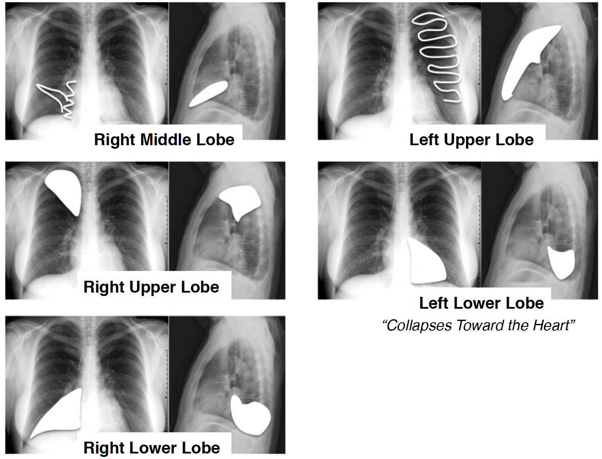
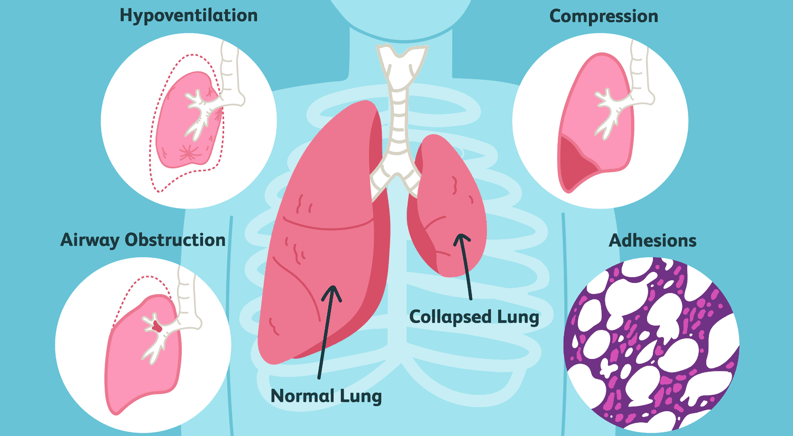
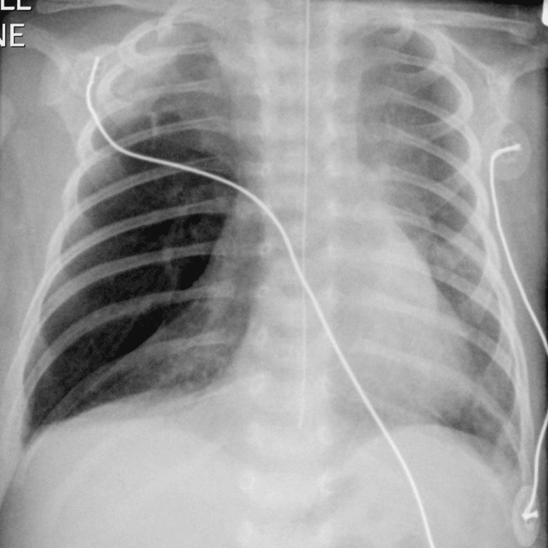
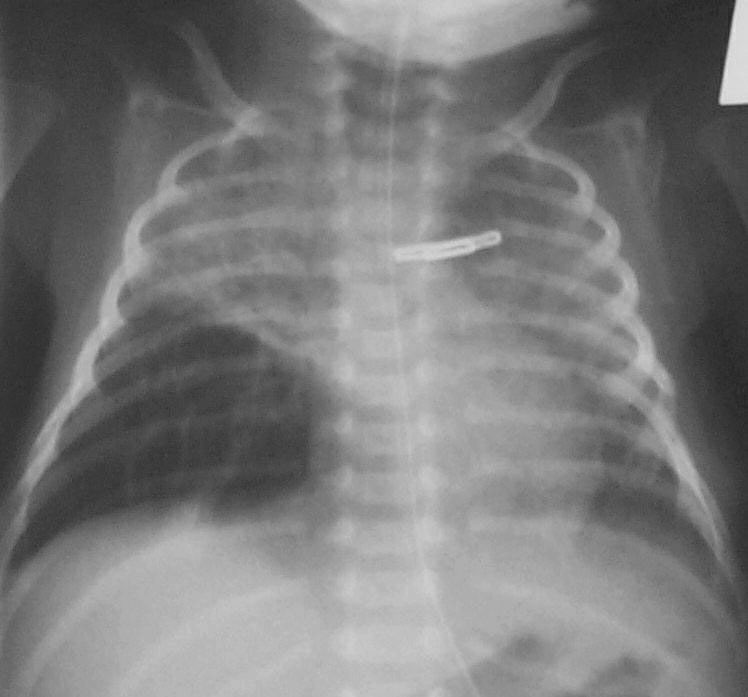

Xẹp Phổi
Nguồn: Xray.vn — xray.vn/xep-phoi
I. Đại cương
– Xẹp phổi (atelectasis) là tình trạng giảm thể tích một phần hoặc toàn bộ nhu mô phổi do các phế nang không nở hoặc bị xẹp. Khác với đông đặc phổi, xẹp phổi đặc trưng bởi giảm thể tích vùng tổn thương.
– Cơ chế bệnh sinh: Xẹp phế nang có thể do tắc nghẽn đường thở khiến khí bị hấp thu, chèn ép từ bên ngoài, giảm chất hoạt diện hoặc co kéo do xơ hóa; phạm vi tổn thương thay đổi từ khu trú đến lan tỏa, tùy cơ chế và vị trí tổn thương.
– Hình thái lâm sàng: Biểu hiện phụ thuộc vào nguyên nhân và mức độ xẹp; tổn thương khu trú có thể không triệu chứng, trong khi xẹp phổi rộng có thể gây khó thở hoặc giảm oxy máu.
– Vai trò hình ảnh: Giảm thể tích vùng phổi bị ảnh hưởng là dấu hiệu cốt lõi; chẩn đoán hình ảnh giúp xác định vị trí, phạm vi, gợi ý cơ chế hoặc nguyên nhân và đánh giá biến chứng.

* Nguyên nhân:
– Xẹp phổi tắc nghẽn (obstructive/resorptive atelectasis):
+ Nguyên nhân gồm u nội phế quản nguyên phát hoặc di căn, nút nhầy, dị vật, cục máu đông và hẹp phế quản do viêm; tần suất từng nguyên nhân thay đổi theo tuổi và bối cảnh lâm sàng.
+ Khi phế quản bị tắc hoàn toàn, khí trong các phế nang phía sau chỗ tắc dần được hấp thu vào máu mà không được bù lại, gây xẹp nhu mô phổi phía xa.
– Xẹp phổi do co kéo xơ (cicatrization atelectasis): Sẹo xơ co kéo nhu mô và hạn chế khả năng giãn nở; có thể gặp sau bệnh u hạt, nhiễm trùng phá hủy như viêm phổi hoại tử hoặc xơ hóa sau xạ trị.
– Xẹp phổi thụ động (passive/relaxation atelectasis): Phổi co lại khi lực căng xuyên phổi giảm do áp lực âm trong khoang màng phổi bị mất hoặc giảm, thường gặp trong tràn khí hoặc tràn dịch màng phổi.
– Xẹp phổi chèn ép (compressive atelectasis):
+ Nhu mô phổi bị ép bởi tổn thương choán chỗ trong lồng ngực, làm giảm thể tích phế nang.
+ Trong nhiều cách phân loại, xẹp phổi chèn ép chồng lấp với xẹp phổi thụ động; ranh giới và cách dùng các thuật ngữ này không hoàn toàn thống nhất.
– Xẹp phổi dính (adhesive atelectasis): Thiếu hụt hoặc rối loạn chức năng chất hoạt diện làm tăng sức căng bề mặt, khiến phế nang mất ổn định và xẹp dù không có tắc nghẽn cơ học; có thể gặp trong hội chứng suy hô hấp sơ sinh và hội chứng suy hô hấp cấp.

© Chẩn Đoán Hình Ảnh Xray.vn
II. Chẩn đoán x-quang
1. Xẹp toàn bộ
– Nguyên nhân: Xẹp toàn bộ một bên phổi có thể do tắc nghẽn phế quản gốc hoặc do cơ chế không tắc nghẽn:
+ Tắc nghẽn thường do tổn thương trong lòng phế quản gốc, như u hoặc nút nhầy, hoặc do chèn ép phế quản từ bên ngoài.
+ Xẹp không tắc nghẽn thường đi kèm tràn dịch hoặc tràn khí màng phổi lượng lớn.
– Dấu hiệu hình ảnh:
+ Mờ gần toàn bộ trường phổi bên tổn thương, có thể đồng nhất.
+ Giảm thể tích phổi biểu hiện bằng nâng cao vòm hoành – bên trái dễ nhận biết hơn do có bóng hơi dạ dày, hẹp khoang liên sườn và kéo rốn phổi, tim, khí quản, trung thất về phía phổi xẹp.
+ Nếu tràn dịch hoặc tràn khí màng phổi lượng lớn tạo hiệu ứng choán chỗ, trung thất có thể bị đẩy về bên đối diện hoặc làm thay đổi hướng di lệch dự kiến do xẹp phổi.
+ Phổi đối bên có thể tăng thông khí bù trừ và thoát vị qua đường giữa ra trước trung thất, tạo dải sáng cạnh trung thất; trên phim nghiêng, khoang sáng sau xương ức có thể rộng hơn.
+ Có thể xóa bờ tim và vòm hoành bên tổn thương.


2. Xẹp không tắc nghẽn
* Xẹp phổi thụ động:
– Xẹp phổi thụ động (passive/relaxation atelectasis) là tình trạng nhu mô phổi co lại khi lực giữ phổi nở giảm, thường do tràn dịch hoặc tràn khí màng phổi.
– Đặc điểm hình ảnh: Vùng phổi giảm thể tích thường áp sát vùng dịch hoặc khí màng phổi; phế quản còn thông nên có thể thấy phế quản chứa khí. Phân bố theo thùy thay đổi tùy vị trí, mức độ tổn thương và tư thế, không cố định theo một kiểu.
– Phân biệt với xẹp phổi tắc nghẽn do u (tumor-related obstructive atelectasis): Xẹp thụ động thường đi kèm bất thường khoang màng phổi và phế quản có thể còn thông; xẹp do u có thể có dấu tắc hoặc cụt phế quản gốc, hay thấy khối quanh phế quản. Các dấu hiệu này có thể chồng lấp trên X-quang.
– Cạm bẫy: Thấy phế quản chứa khí, hoặc không thấy dày hay nốt màng phổi, không đủ để loại trừ tắc nghẽn do u. Nếu nguyên nhân xẹp phổi chưa rõ hoặc còn nghi ngờ, cân nhắc khảo sát thêm bằng CT ngực hoặc nội soi phế quản.
* Xẹp phổi do chèn ép:
– Xẹp phổi do chèn ép (compressive atelectasis) xảy ra khi áp lực từ bên ngoài làm nhu mô phổi giảm thể tích và đẩy khí khỏi phế nang.
– Nguyên nhân: Thường gặp gồm tràn dịch hoặc tràn khí màng phổi lượng lớn, khối trung thất hoặc khối thành ngực; u phổi chỉ gây xẹp chèn ép khi tác động từ ngoài vào phế quản hoặc nhu mô.
– Đặc điểm hình ảnh: Vùng phổi xẹp thường tiếp giáp với tác nhân chèn ép; trên phim có thể thấy dịch, khí màng phổi hoặc khối choán chỗ tương ứng.
– Cạm bẫy: Xẹp phổi do chèn ép và xẹp phổi thụ động có thể chồng lấp, không có ngưỡng giảm thể tích chuẩn để phân định hai nhóm. U có thể gây xẹp do chèn ép từ ngoài hoặc do tắc lòng phế quản; cần phân loại theo cơ chế thực tế.

* Xẹp phổi do dính:
– Xẹp phổi do dính (adhesive atelectasis) xảy ra khi thiếu hụt hoặc bất hoạt chất hoạt diện làm tăng sức căng bề mặt, giảm độ ổn định của phế nang và gây xẹp.
– Nguyên nhân: Thiếu chất hoạt diện thường gặp ở trẻ sinh non mắc hội chứng suy hô hấp sơ sinh (neonatal respiratory distress syndrome); rối loạn hoặc bất hoạt chất hoạt diện có thể góp phần vào hội chứng suy hô hấp cấp (acute respiratory distress syndrome, ARDS).
– Đặc điểm hình ảnh: Biểu hiện X-quang phụ thuộc bệnh nền; có thể thấy giảm thể tích phổi và mờ lan tỏa, nhưng các dấu hiệu này không đặc hiệu cho xẹp phổi do dính.
– Cạm bẫy: Xẹp phổi sau phẫu thuật, thở nông, hít khói, phẫu thuật bắc cầu tim hoặc urê huyết có thể liên quan đến xẹp phổi qua nhiều cơ chế; không nên xem các yếu tố này là nguyên nhân đặc hiệu của xẹp phổi do dính nếu chưa có căn cứ về rối loạn chất hoạt diện.

* Xẹp phổi do sẹo xơ:
– Xẹp phổi do sẹo xơ (cicatrization atelectasis) là tình trạng xơ hóa co kéo nhu mô, làm giảm thể tích và biến dạng cấu trúc vùng phổi; có thể gặp sau lao, viêm hoặc nhiễm trùng mạn tính, xơ hóa sau xạ trị và bệnh phổi do amiăng.
– Đặc điểm hình ảnh:
+ Tổn thương có thể khu trú hoặc lan tỏa; hình mờ có thể dạng lưới, dải hoặc khối/nốt, nhưng các hình thái này không đặc hiệu.
+ Giảm thể tích và co kéo cấu trúc phổi; khi tổn thương rộng, có thể kéo rốn phổi và trung thất về bên tổn thương, kèm tăng thông khí bù trừ ở vùng phổi còn lại.
+ Có thể thấy giãn phế quản do co kéo trong vùng xơ hóa.
– Cạm bẫy: Hình mờ dạng khối, nốt hoặc đông đặc không đủ để phân biệt xẹp do xơ với u; cần đánh giá cùng dấu giảm thể tích, biến dạng kiến trúc và diễn tiến tổn thương.
=> Case lâm sàng 1:
* Xẹp phổi phẳng, dạng đĩa hoặc thành dải:
– Xẹp phổi dạng dải (linear/plate-like atelectasis) là xẹp khu trú, thường dưới phân thùy, biểu hiện bằng dải mờ mảnh trên X-quang:
+ Thường ở vùng đáy phổi, có hướng ngang hoặc chếch; có thể áp sát màng phổi nhưng không phải lúc nào cũng vậy. Độ dày thay đổi.
+ Thường liên quan giảm thông khí, như thở nông hoặc sau phẫu thuật, hoặc tắc nghẽn đường thở nhỏ, chẳng hạn do nút nhầy; khối u nhỏ hay hẹp đường thở ít gặp hơn.
+ Cũng có thể là xẹp thụ động của nhu mô phổi sát vùng tràn dịch màng phổi.
+ Có thể cải thiện khi nguyên nhân được xử lý và thông khí tốt hơn.
– Cạm bẫy: Dải mờ tồn tại hoặc tái phát cần được đánh giá thêm, nhất là để tìm nguyên nhân tắc nghẽn.
=> Case lâm sàng 1:
=> Case lâm sàng 2:
* Xẹp phổi tròn
– Xẹp phổi tròn (rounded atelectasis), còn gọi là hội chứng Blesovsky (Blesovsky syndrome), là dạng xẹp phổi ngoại vi liên quan đến bệnh màng phổi:
+ Thường gặp ở thùy dưới, vùng sau và sát màng phổi; liên quan đặc biệt với bệnh màng phổi do amiăng, nhưng cũng có thể gặp sau viêm màng phổi tiết dịch hoặc lao.
+ Cơ chế chưa được giải thích hoàn toàn. Một giả thuyết cho rằng tràn dịch hoặc viêm màng phổi gây xẹp nhu mô kế cận, sau đó dày và xơ dính màng phổi làm nhu mô gấp cuộn, khiến tổn thương tồn tại.
+ Trên X-quang, thường thấy đám mờ tròn hoặc bầu dục ở ngoại vi, tiếp giáp màng phổi; có thể kèm dày màng phổi và giảm thể tích thùy phổi.
+ Tổng quan hình ảnh của Sobocińska và cộng sự (2014) ghi nhận kích thước thường khoảng 2,5–8 cm; đây là dải mô tả trong y văn, không phải ngưỡng chẩn đoán.
+ Cạm bẫy: Tổn thương có thể giống khối u ngoại vi; dày màng phổi đơn độc không xác lập chẩn đoán. Hình thái không điển hình cần được đánh giá thêm, thường bằng CT.
+ Bất thường màng phổi kèm theo: Trong một nghiên cứu hồi cứu gồm 50 người bệnh với 59 tổn thương, mọi trường hợp đều có ít nhất một bất thường màng phổi; ghi nhận dày màng phổi (88%), tràn dịch màng phổi (60%) và vôi hóa màng phổi (40%) (Azour và cộng sự, 2018).
=> Case lâm sàng 1:
+ Dấu hiệu đuôi sao chổi (comet-tail sign): Trên CT, các bó mạch-phế quản cong và hội tụ vào vùng nhu mô xẹp do bị kéo theo nếp gấp sát màng phổi; đây là dấu hiệu gợi ý, cần đối chiếu với bệnh lý màng phổi và giảm thể tích thùy.
=> Case lâm sàng 1:
=> Case lâm sàng 2:
=> Case lâm sàng 3:
=> Case lâm sàng 4:
* Xẹp phổi sau mổ
– Xẹp phổi sau phẫu thuật (postoperative atelectasis) là biến chứng hô hấp thường gặp, nhất là sau phẫu thuật lồng ngực và bụng trên:
+ Thuốc mê và rối loạn chức năng cơ hoành có thể làm giảm dung tích cặn chức năng; đau sau mổ và thở nông góp phần gây xẹp các vùng phổi phụ thuộc.
+ Giảm ho, ứ đọng dịch tiết và rối loạn chất hoạt diện cũng có thể góp phần; cơ chế thường phối hợp.
+ Thường gặp ở vùng đáy và các vùng phổi phụ thuộc, với hình thái từ xẹp dưới phân thùy dạng dải đến xẹp phân thùy hoặc thùy.
+ Cạm bẫy: Xẹp thùy kéo dài sau mổ cần đánh giá tắc nghẽn, chẳng hạn do nút nhầy, thay vì mặc định là xẹp phổi không biến chứng.
3. Xẹp tắc nghẽn
* Đặc điểm hình ảnh
– Xẹp phổi tắc nghẽn (obstructive/resorptive atelectasis) là tình trạng giảm thể tích nhu mô phía sau chỗ tắc do khí trong phế nang dần được hấp thu:
+ Mức tắc thường quyết định phạm vi xẹp: tắc phế quản thùy có thể gây xẹp thùy, tắc phế quản phân thùy gây xẹp phân thùy; tắc phế quản gốc có thể gây xẹp toàn bộ phổi.
+ Ở người lớn, ung thư phổi trung tâm hoặc tổn thương ác tính trong lòng phế quản là nguyên nhân quan trọng. Nguyên nhân khác gồm u nội phế quản lành tính hoặc di căn, nút nhầy, dị vật, hẹp phế quản do viêm hoặc nhiễm trùng (như lao, nấm), và chèn ép từ ngoài bởi u, hạch hoặc cấu trúc tim mạch lớn; tần suất thay đổi theo tuổi và bối cảnh.
+ Hen nặng có thể gây tắc nghẽn qua co thắt phế quản và nút nhầy; sau phẫu thuật, nút nhầy là một nguyên nhân thường gặp.
+ Khi tắc hoàn toàn phế quản trung tâm, phế quản phía xa thường không còn chứa khí; dấu này có thể vẫn hiện diện khi tắc không hoàn toàn.
– Đặc điểm hình ảnh chung:
+ Vùng phổi xẹp tăng đậm độ kèm giảm thể tích.
+ Rãnh liên thùy di lệch về phía vùng xẹp; mạch máu và phế quản co cụm, hội tụ do mất thể tích.
+ Vòm hoành cùng bên nâng cao, khoang liên sườn hẹp; tim, khí quản và trung thất thường bị kéo về phía phổi xẹp.
+ Rốn phổi thường bị kéo lên ở xẹp thùy trên và xuống ở xẹp thùy dưới.
+ Có thể xóa bờ tim, vòm hoành hoặc bờ trung thất tiếp giáp với vùng mờ.
+ Các thùy phổi còn lại có thể tăng thông khí bù trừ, biểu hiện tăng sáng.
+ Cạm bẫy: Các dấu hiệu thay đổi theo vị trí và mức độ xẹp, không nhất thiết xuất hiện đồng thời. Tràn dịch, tràn khí hoặc khối choán chỗ kèm theo có thể làm thay đổi hướng di lệch trung thất.
* Xẹp thùy trên phổi phải
– Xẹp thùy trên phổi phải (right upper lobe collapse) làm thùy co kéo lên trên, vào trong và ra trước:
+ Trên phim thẳng, rãnh liên thùy bé di lệch lên trên và vào trong.
+ Trên phim nghiêng, rãnh liên thùy lớn di lệch ra trước; rãnh liên thùy bé cũng di lệch lên trên.
+ Rốn phổi phải có thể bị kéo lên; phế quản thùy giữa và thùy dưới có thể bị kéo lên theo.
+ Khi xẹp hoàn toàn, thùy trên co nhỏ đáng kể nên hình mờ có thể kín đáo; cần chú ý các dấu giảm thể tích và thay đổi vùng trung thất trên.
+ Thùy giữa và thùy dưới phải có thể tăng thông khí bù trừ.
+ Cạm bẫy: Mất bờ tim phải không phải dấu hiệu đặc trưng của xẹp thùy trên đơn thuần; thường gợi ý xẹp thùy giữa hơn.
=> Case lâm sàng 1:
=> Case lâm sàng 2:
– Dấu hiệu đỉnh cạnh hoành (juxtaphrenic peak sign):
+ Trên phim X-quang ngực thẳng, là đỉnh mờ hình tam giác, bờ rõ, hướng lên trên ở phần trong của vòm hoành, tạo hình vòm hoành nhô cao hoặc dạng lều.
+ Thường liên quan giảm thể tích thùy trên phải hoặc trái; cũng có thể gặp khi giảm thể tích phối hợp thùy trên–giữa hoặc, ít gặp hơn, thùy giữa đơn độc.
+ Dấu hiệu chủ yếu do co kéo khe liên thùy phụ dưới; đôi khi liên quan khe liên thùy khác hoặc dây chằng phổi dưới.
+ Dấu hiệu phản ánh giảm thể tích thùy, không đặc hiệu cho tắc nghẽn; cũng có thể gặp sau cắt thùy trên, lao hoặc xạ trị.
– Dấu hiệu chữ S ngược (Golden S-sign):
+ Trên phim X-quang thẳng, dấu hiệu kinh điển trong xẹp thùy trên phải kèm khối trung tâm vùng rốn phổi: rãnh liên thùy bé bị kéo lệch tạo thành phần cong lõm, còn khối trung tâm tạo phần lồi ở đoạn trong, hợp thành hình chữ S ngược.
+ Khối gây biến dạng có thể nằm trong lòng phế quản hoặc chèn ép phế quản từ ngoài; ung thư phổi là một nguyên nhân quan trọng, nhưng không phải nguyên nhân duy nhất.
+ Cạm bẫy: Đây là dấu gợi ý khối gây tắc nghẽn trung tâm, không đặc hiệu cho ung thư. Dấu hiệu này điển hình thấy ở khối u phế quản thùy trên phổi (P) nhưng cũng có thể gặp ở thùy trên phổi trái.


* Xẹp thùy trên phổi trái
– Xẹp thùy trên phổi trái (left upper lobe collapse):
+ Phổi trái không có rãnh liên thùy bé. Khi xẹp, thùy trên co về phía trước và trong, làm rãnh liên thùy lớn di lệch ra trước, gần song song với thành ngực trước; thay đổi này thấy rõ hơn trên phim nghiêng.
+ Trên phim nghiêng, vùng xẹp tạo đám mờ sau xương ức, có bờ sau rõ.
+ Trên phim thẳng, đám mờ dạng màn xuất phát từ rốn phổi trái, mờ dần ra ngoài và xuống dưới; có thể xóa bờ trung thất trên trái và bờ tim trái.
+ Dấu hiệu đỉnh cạnh hoành (juxtaphrenic peak sign): mỏm nhọn khu trú ở vòm hoành, thường do lực kéo lên của rãnh phụ dưới của phổi (inferior accessory fissure).
+ Giảm thể tích thùy trên trái làm rốn phổi trái nâng cao và phế quản gốc trái nằm gần ngang. Khi xẹp nhiều, có thể kèm nâng vòm hoành trái, hẹp khoang liên sườn, dịch chuyển trung thất sang trái và xoay tim ra sau, sang trái.


=> Case lâm sàng 1:
=> Case lâm sàng 2:
=> Case lâm sàng 3:
=> Case lâm sàng 4:
=> Case lâm sàng 5:
+ Dấu hiệu liềm khí (Luftsichel sign): thùy dưới trái, đặc biệt phân thùy trên (S6), có thể giãn bù và chen giữa trung thất với thùy trên xẹp, tạo dải sáng hình liềm cạnh quai động mạch chủ, làm rõ bờ quai động mạch chủ.
* Xẹp thùy giữa phổi phải
– Xẹp thùy giữa phổi phải (right middle lobe collapse):
+ Hội chứng thùy giữa (middle lobe syndrome) thường chỉ tình trạng xẹp thùy giữa kéo dài hoặc tái diễn; được Graham và cộng sự mô tả lâm sàng năm 1948 trong các trường hợp có hạch to chèn ép phế quản. Hội chứng có thể do tắc nghẽn hoặc không tắc nghẽn.
+ Phế quản thùy giữa tương đối dài, hẹp, xuất phát với góc nhọn; các rãnh sâu và thông khí bàng hệ kém khiến thùy dễ xẹp.
+ Thể tắc nghẽn có thể do tổn thương trong lòng phế quản hoặc do hạch quanh phế quản, khối u chèn ép từ ngoài. Ở trẻ em, hen có liên quan đến xẹp thùy giữa tái diễn; viêm niêm mạc và phù nề có thể góp phần làm giảm thông khí.
+ Phim nghiêng giúp đánh giá rõ hơn: thùy xẹp tạo đám mờ hình tam giác, đỉnh hướng về rốn phổi, đáy áp sát thành ngực trước. Rãnh liên thùy bé di lệch xuống dưới, phần dưới rãnh liên thùy lớn di lệch lên trên; khi xẹp hoàn toàn, hai rãnh có thể gần áp sát.


=> Case lâm sàng 1:
– Trên phim thẳng:
+ Đôi khi biểu hiện duy nhất là xóa bờ tim phải do thùy giữa tiếp giáp với nhĩ phải (dấu hiệu xóa bờ tim phải, silhouette sign).
+ Rãnh liên thùy bé có thể thấy di lệch xuống dưới và vào trong do giảm thể tích thùy giữa.
+ Khi giảm thể tích nhiều, có thể kèm nâng vòm hoành phải và hẹp khoang liên sườn cùng bên; các dấu này không đặc hiệu cho xẹp thùy giữa.
+ Cạm bẫy: Rốn phổi phải thường không dịch chuyển đáng kể trong xẹp khu trú thùy giữa; không xem dịch chuyển rốn phổi là dấu hiệu điển hình.
* Xẹp thùy dưới phổi phải
– Trên phim thẳng:
+ Xẹp thùy dưới phổi phải (right lower lobe collapse) tạo đám mờ tam giác ở vùng đáy phổi, đỉnh hướng về rốn phổi và đáy áp sát vòm hoành; rãnh liên thùy lớn di lệch xuống dưới, góp phần tạo bờ rõ của đám mờ.
+ Bờ tim phải thường còn rõ, giúp phân biệt với xẹp thùy giữa. Vòm hoành phải có thể nâng cao; phần trong có thể không rõ.
+ Rãnh liên thùy bé và phần trên của rãnh liên thùy lớn có thể di lệch xuống dưới; phần dưới của rãnh liên thùy lớn di lệch ra sau, rõ hơn trên phim nghiêng.
+ Động mạch liên thùy phải nằm trong thùy xẹp nên có thể bị che khuất. Rốn phổi phải có thể nhỏ lại và đôi khi có vẻ hạ thấp, nhưng mức độ hạ thấp khó đánh giá.
+ Khi xẹp kéo dài hoặc giảm thể tích nhiều, có thể thấy hẹp các khoang liên sườn cùng bên.
– Trên phim nghiêng: Đám mờ tam giác nằm phía sau, có đỉnh gần rốn phổi và đáy áp sát phần sau vòm hoành phải; bờ sau vòm hoành phải có thể bị xóa.

=> Case lâm sàng 1:
=> Case lâm sàng 2:
* Xẹp thùy dưới phổi trái
– Trên phim thẳng:
+ Xẹp thùy dưới phổi trái (left lower lobe collapse) thường tạo đám mờ tam giác sau tim, ở vùng đáy-trong phổi trái, có đỉnh hướng về rốn phổi và đáy áp sát vòm hoành (dấu hiệu cánh buồm sau tim, retrocardiac sail sign).
+ Rãnh liên thùy lớn di lệch xuống dưới; bờ thùy xẹp có thể tạo đường viền đôi dọc bờ trái tim.
+ Phần trong vòm hoành trái và bờ động mạch chủ xuống có thể bị xóa.
+ Rốn phổi trái có thể nhỏ lại; động mạch liên thùy có thể bị che khuất do nằm trong thùy xẹp, khiến vị trí hạ thấp khó đánh giá.
+ Khi xẹp nhiều hoặc kéo dài, có thể kèm nâng vòm hoành trái, hẹp khoang liên sườn trái và dịch chuyển trung thất sang trái.
– Trên phim nghiêng:
+ Đám mờ tam giác ở vùng sau-dưới lồng ngực, đỉnh gần rốn phổi và đáy áp sát phần sau vòm hoành trái; phần sau vòm hoành có thể bị xóa.
+ Rãnh liên thùy lớn di lệch xuống dưới và ra sau. Các đốt sống ngực phía dưới tăng đậm độ dần (dấu hiệu cột sống, spine sign).


=> Case lâm sàng 1:
=> Case lâm sàng 2:
– Dấu hiệu phẳng eo (flat waist sign): Trong xẹp nặng thùy dưới trái, tim dịch chuyển và xoay sang trái, làm dẹt đường bờ quai động mạch chủ và động mạch phổi trái.
* Xẹp thùy giữa + thùy dưới
– Xẹp phối hợp thùy giữa và thùy dưới phổi phải (combined right middle and lower lobe collapse):
+ Rãnh liên thùy bé và rãnh liên thùy lớn di lệch xuống dưới và ra sau, kéo các thùy xẹp về vùng sau-dưới của lồng ngực phải, tạo đám mờ có thể có dạng tam giác.
+ Trên phim thẳng, đám mờ có thể xóa bờ tim phải và vòm hoành phải. Hình ảnh có thể giống xẹp thùy dưới đơn thuần; xóa bờ tim phải gợi ý thùy giữa cũng bị ảnh hưởng.
* Xẹp thùy trên + thùy giữa
– Xẹp phối hợp thùy trên phải và thùy giữa (combined right upper and middle lobe collapse):
+ Đây là kiểu phối hợp hiếm. Trên phim thẳng, đám mờ và giảm thể tích có thể liên quan cả vùng trên lẫn vùng giữa phổi phải, làm xóa bờ trung thất trên phải và bờ tim phải.
+ Trên phim nghiêng, đám mờ vùng trước có thể mang đặc điểm của cả hai thùy; hướng di lệch rãnh liên thùy bé không nên được diễn giải theo dấu hiệu của riêng một thùy.
+ Dấu hiệu đỉnh cạnh hoành (juxtaphrenic peak sign) có thể đi kèm do thành phần giảm thể tích thùy trên, nhưng không đặc hiệu cho xẹp phối hợp này.
+ Khi X-quang chưa xác định rõ các thùy bị xẹp, CLVT có thể giúp làm rõ phạm vi xẹp và nguyên nhân.
III. Chẩn đoán CLVT
– Đặc điểm hình ảnh:
+ Vùng phổi xẹp giảm thông khí và tăng đậm độ; trên cửa sổ trung thất có thể gần đậm độ mô mềm. Tùy thùy, vùng xẹp có thể có dạng hình chêm hoặc tam giác, với đỉnh hướng về rốn phổi và đáy áp sát màng phổi.
+ Dấu hiệu giảm thể tích gồm rãnh liên thùy bị kéo về phía vùng xẹp; các mạch máu và phế quản trong vùng này co cụm. Cơ hoành cùng bên có thể nâng cao, tùy thùy bị xẹp và mức độ giảm thể tích.
+ Có thể thấy rốn phổi và trung thất bị kéo về phía vùng xẹp; phần phổi còn thông khí có thể giãn bù, tùy vị trí và mức độ mất thể tích.
+ Cần khảo sát phế quản thùy để tìm hẹp, tắc hoặc đoạn cắt cụt, cũng như tổn thương trong lòng hay chèn ép từ ngoài.
– Cạm bẫy:
+ Phế quản đồ khí (air bronchogram) có thể còn thấy khi phế quản vẫn thông, kể cả trong xẹp thụ động; dấu này thường giảm hoặc mất khi phế quản bị tắc hoàn toàn. Không dùng riêng sự hiện diện hay vắng mặt của dấu này để xác định cơ chế xẹp.
+ Sau tiêm, vùng xẹp có thể ngấm thuốc; mức độ và tính đồng nhất thay đổi theo nguyên nhân. Ngấm thuốc đồng nhất có thể gặp trong xẹp thụ động nhưng không phải dấu hiệu chung cho mọi trường hợp.
=> Case lâm sàng 1:
=> Case lâm sàng 2:
* U phổi và xẹp phổi
– Xẹp phổi sau tắc nghẽn (postobstructive atelectasis):
+ Sau tiêm, nhu mô xẹp ở phía ngoại vi chỗ tắc có thể ngấm thuốc rõ và tương đối đồng nhất; khối u trung tâm thường ngấm thuốc ít hơn, nhưng mức độ ngấm thay đổi và có thể không đồng nhất khi có hoại tử.
+ U trung tâm có thể chèn ép hoặc xâm lấn phế quản, gây hẹp lòng hay cắt cụt phế quản.
+ Cạm bẫy: Khác biệt về ngấm thuốc hỗ trợ phân biệt u với nhu mô xẹp nhưng không đủ để kết luận đơn độc; cần đánh giá trực tiếp khối u và vị trí tắc phế quản.
=> Case lâm sàng 1:
=> Case lâm sàng 2:
IV. Chẩn đoán siêu âm
– Đặc điểm hình ảnh:
+ Vùng phổi xẹp mất khí có cấu trúc dạng mô, hồi âm tương đối đồng nhất và gần giống nhu mô gan (hình ảnh gan hóa phổi, hepatization).
+ Hình ảnh gan hóa không đặc hiệu cho xẹp phổi; cũng có thể gặp trong đông đặc phổi, nên cần kết hợp các dấu hiệu siêu âm khác để diễn giải.
+ Phần phổi xẹp tiếp xúc với màng phổi có thể có dạng hình chêm hoặc tam giác, với đáy áp sát màng phổi tạng.
+ Cạm bẫy: Siêu âm chủ yếu khảo sát được phần tổn thương tiếp xúc với màng phổi, nên không đánh giá đáng tin cậy toàn bộ thùy xẹp hoặc xác định đỉnh tổn thương hướng về rốn phổi.
+ Hình dạng hình chêm hoặc tam giác không đặc hiệu cho xẹp phổi.
+ Phế quản đồ khí có thể hiện diện hoặc vắng mặt. Nếu thấy phế quản đồ động, hình ảnh nghiêng về đông đặc viêm phổi hơn xẹp tắc nghẽn; phế quản đồ tĩnh có thể gặp trong cả xẹp và viêm phổi.
+ Doppler màu có thể ghi nhận dòng chảy trong các mạch máu của vùng xẹp; hình ảnh thay đổi theo cơ chế và không có kiểu Doppler đơn độc đủ đặc hiệu để xác định xẹp phổi.
– Xẹp phổi thụ động do tràn dịch hoặc tràn khí màng phổi:
+ Tràn dịch màng phổi có thể gây xẹp phổi do chèn ép (compressive atelectasis); tràn khí màng phổi gây xẹp thụ động (passive atelectasis) khi mất áp lực âm trong khoang màng phổi khiến phổi co hồi.
+ Khi có tràn dịch, vùng phổi xẹp có thể có cấu trúc dạng mô và nằm trong dịch màng phổi; có thể thấy phế quản đồ khí nếu phế quản còn thông.
+ Khi có tràn khí, khí màng phổi cản trở sóng siêu âm nên thường không quan sát trực tiếp được phần nhu mô phổi xẹp nằm phía sau. Điểm phổi (lung point) có thể giúp xác định ranh giới tràn khí nhưng không cho thấy toàn bộ vùng xẹp.

=> Case lâm sàng 1:

– Xẹp phổi tắc nghẽn (obstructive atelectasis):
+ Có thể do u trong lòng phế quản hoặc khối u chèn ép từ ngoài; cũng cần cân nhắc các nguyên nhân tắc khác như nút nhầy hoặc dị vật.
+ Khi phế quản phía xa chỗ tắc còn chứa khí, có thể thấy phế quản đồ khí; sau tắc hoàn toàn và khí đã được hấp thu, dấu này thường mất.
+ Nếu có cửa sổ âm qua vùng phổi xẹp, có thể thấy khối u hồi âm hỗn hợp nằm trong hoặc được bao quanh bởi nhu mô xẹp; siêu âm không phải lúc nào cũng quan sát được u trung tâm, nên cần đối chiếu bằng CLVT.
V. Chẩn đoán phân biệt
* Xẹp phổi
– Đặc điểm hình ảnh:
+ Vùng xẹp có thể khu trú theo thùy, phân thùy hoặc nhỏ hơn, kèm giảm thể tích vùng phổi bị ảnh hưởng.
+ Khi vùng xẹp đủ rộng, có thể kéo rốn phổi và trung thất về cùng bên; dấu kéo lệch có thể không rõ khi xẹp khu trú hoặc có yếu tố đối kháng.
– Xẹp tắc nghẽn (obstructive atelectasis):
+ Phế quản đồ khí (air bronchogram) thường vắng khi phế quản lớn bị tắc hoàn toàn; có thể còn thấy nếu tắc chưa hoàn toàn hoặc phế quản phía xa vẫn còn khí.
+ Ở người lớn, u phế quản trung tâm là nguyên nhân quan trọng cần loại trừ; nút nhầy và dị vật cũng có thể gây tắc nghẽn.
– Cạm bẫy:
+ Giảm thể tích và kéo lệch các cấu trúc lân cận ủng hộ xẹp phổi; đông đặc phổi thường bảo tồn thể tích hơn, nhưng có thể đồng thời xuất hiện với xẹp sau tắc nghẽn.
+ Không dùng riêng sự hiện diện hay vắng mặt của phế quản đồ khí để xác định nguyên nhân hoặc mức độ tắc nghẽn.
– Xẹp do chèn ép và xẹp thụ động:
+ Tràn dịch màng phổi hoặc khối choán chỗ trong lồng ngực có thể gây xẹp do chèn ép (compressive atelectasis); phế quản đồ khí có thể còn thấy nếu phế quản vẫn thông.
+ Tràn khí màng phổi có thể gây xẹp thụ động (passive atelectasis) do mất áp lực âm trong khoang màng phổi khiến phổi co hồi; đây là cơ chế khác với chèn ép bởi dịch hoặc khối.


=> Case lâm sàng 1:


* Tổn thương đông đặc
– Bản chất:
+ Đông đặc là tình trạng khí trong phế nang bị thay thế bởi dịch viêm hoặc mủ, dịch phù, máu, tế bào u hay các chất khác; có thể khu trú ở một nhóm phế nang hoặc tiểu thùy, hoặc lan rộng hơn tùy nguyên nhân.
+ Xơ hóa mô kẽ không nên xếp chung vào các chất thay thế khí trong phế nang, dù có thể gây tăng đậm độ nhu mô.
– Đặc điểm hình ảnh:
+ Có thể thấy phế quản đồ khí nếu phế quản còn thông và chứa khí.
+ Thể tích phổi thường được bảo tồn; thường không có dấu kéo rãnh liên thùy hoặc vòm hoành do giảm thể tích, trừ khi đồng thời có xẹp phổi.
– Cạm bẫy:
+ Phế quản đồ khí không đặc hiệu cho đông đặc; cũng có thể gặp trong một số dạng xẹp phổi.
+ Khi phân biệt với xẹp phổi, cần chú ý các dấu giảm thể tích và kéo lệch cấu trúc lân cận.

– Nguyên nhân:
+ Nhiễm trùng: viêm phổi thùy, viêm phế quản phổi.
+ Nguyên nhân không nhiễm trùng: phù phổi, viêm phổi hít, xuất huyết phế nang và nhồi máu phổi, thường liên quan thuyên tắc động mạch phổi.
+ Bệnh viêm: viêm phổi tăng bạch cầu ái toan, viêm phổi tổ chức hóa.
+ Tân sinh: ung thư biểu mô tuyến phổi có kiểu phát triển lepidic; các ung thư phổi khác cũng có thể gây đông đặc, chẳng hạn do tắc nghẽn phế quản hoặc lan tràn theo khoang khí.


Tài liệu tham khảo
* Chest Radiology: The Essentials, 2nd Edition – Jannette Collins MD, Eric J. Stern MD
* CT features of rounded atelectasis – K McHugh and RM Blaquiere
* Pulmonary Lobar Collapse – Susan J. Copley
* Patterns of Lobar Collapse as Observed Radiographically – Mortimer Lubert, George R. Krause
* Lobar collapse: basic concepts – Anthony V. Proto
* Chest X-Ray – Lung disease Four-Pattern Approach – Robin Smithuis
* Radiological signs of lobar collapse. Chest radiographic findings and CT imaging correlation – E. Barcina García, C. Alvarez Sanz, A. M. Garcia Morena
* Pattern recognition in lobar collapse: Can you read the signs? – E. Sonnex, R. A. Coulden; Leicester/UK
* A pictorial review of unusual lobar collpase – K. Mullin, A. Gummow; Nottingham/UK
* A New View of Lobar Collapse – R. Lakshmanan, A. Gupta; WA/AU
* Chest X-Ray: the essentials – J. J. Delgado Moraleda, A. ALEGRE DELGADO, R. M. Piqueras Olmeda
* Pulmonary atelectasis in anaesthesia and critical care – Komal Ray MBBS FRCA
* Patterns of lobar collapse – R. Grech, A. Mizzi, S. Grech
* Tell me your sign! A support for chest x-ray reporting – C. Valdesi, M. Mereu, A. Farchione
* Grainger & Allison’s Diagnostic Radiology – Andreas Adam
* Characteristic Patterns of Atelectasis – M. I. M. Rodrigues, J. M. Dourado Domingues, F. Rego Costa, A. J. B. S. Madureira